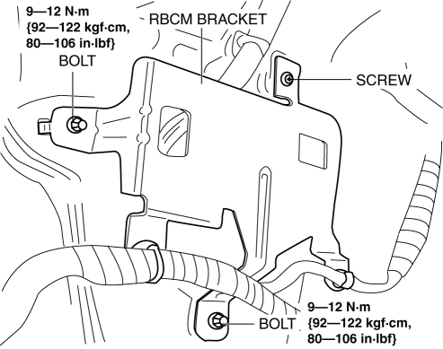
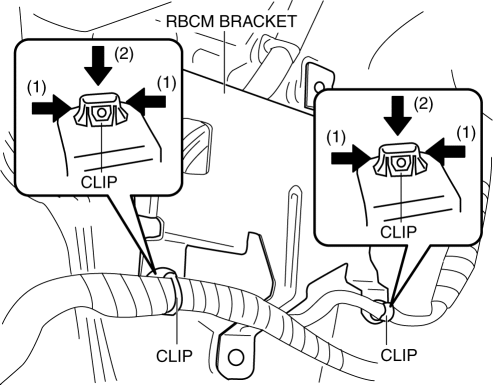
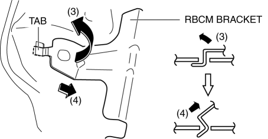

< Previous
Next >
2014 -
Mazda6 -
Body and Accessories
REAR BODY CONTROL MODULE (RBCM) BRACKET REMOVAL/INSTALLATION
1. Disconnect the negative battery cable. (See NEGATIVE BATTERY CABLE DISCONNECTION/CONNECTION [SKYACTIV-G 2.5].)
2. Remove the trunk board. (See TRUNK BOARD REMOVAL/INSTALLATION.)
3. Remove the trunk side pocket. (See TRUNK SIDE POCKET REMOVAL/INSTALLATION.)
4. Remove the trunk end trim. (See TRUNK END TRIM REMOVAL/INSTALLATION.)
5. Pull back the trunk side trim (LH) to a position which allows for the removal of the rear body control module (RBCM). (See TRUNK SIDE TRIM REMOVAL/INSTALLATION.)
6. Remove the Rear body control module (RBCM). (See REAR BODY CONTROL MODULE (RBCM) REMOVAL/INSTALLATION.)
7. Remove the bolts.

8. Remove the screw.
9. While pressing the clip tabs in the direction of the arrows (1) shown in the figure, press the clip in the direction of the arrow (2) to detach the clip tabs from the bracket.

10. Detach the clip.
11. Move the rear body control module (RBCM) in the direction of the arrow (3) shown in the figure, pull it in the direction of the arrow (4) shown in the figure, and disengage the tab from the body.

12. Remove the rear body control module (RBCM) bracket.
13. Install in the reverse order of removal.
< Previous
Next >
© 2012 Mazda North American Operations, U.S.A.